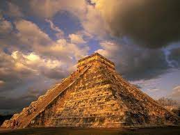

Cultura Asteca
A sociedade asteca era fundada em aspectos religiosos e na guerra, e os grupos que detinham mais poder eram, respectivamente, os sacerdotes, chefes militares e altos funcionários do Império.
Existia a união de vários grupos de famílias no campo, conjunto denominado Calpulli, que era dirigido por um conselho de chefes.
A nobreza, denominada Pipiltin ou Pilli, era constituída pela família real, sacerdotes, chefes de grupos guerreiros e chefes dos Calpulli. A sociedade asteca era ainda composta pelos comerciantes de artigos de luxo (Pochtecas), os plebeus (Macehualtin), os escravos por compra (Mayeques) e os escravos voluntários (Pordioseros).
religião
Considerados o povo mais religioso da região, os astecas possuíam mitos e ritos bastante ricos e variados, sendo que os mais importantes sempre envolviam o Sol. A religião era politeísta e esta civilização cultuava deuses da natureza, como o Sol, a Lua, o Trovão e a Chuva. Os maiores deuses eram os seguintes: Huitzilopóchtli (Deus da Guerra), Tonatiuh (Deus Sol), Tezcatlipoca (Deus guerreiro e inventor do fogo), Tlaloc (Deus da Chuva) e Quetzalcóatl (Criaor do Homem, protetor da vida e da fertilidade).
Os astecas praticavam atividades ritualísticas, também com sacrifícios humanos ou de animais.
A cultura
A arte dos astecas foi bastante influenciada pelas tradições olmecas e toltecas, o que inclui a escultura em jade e as grandes construções. Destacavam-se a confecção de tecidos, os artigos com pinturas e os objetos em ouro e prata.
A arquitetura estava relacionada à religião, sendo que a forma mais utilizada era a enorme pirâmide com escadarias que findava em um santuário.
A música e a poesia estavam estritamente ligadas e, não raro, eram acompanhadas por instrumentos, danças e encenações. Os astecas também desenvolveram cálculos de geometria e astronomia, e utilizaram o calendário maia com algumas modificações.
A escrita, representada por desenhos e símbolos, era utilizada para registro dos calendários sagrados, história, cenas cotidianas e conhecimentos diversos.
A economia
A sustentação da economia do Império Asteca baseava-se no pagamento dos tributos em mercadorias. Os astecas desenvolveram técnicas agrícolas como os terraços nas encostas das montanhas, onde plantavam milho, pimenta, algodão, abóbora etc.
A educação
A educação era completamente controlada pelos sacerdotes. Os astecas possuíam as calmecas, escolas especiais que tinham o objetivo de treinar meninos e meninas para tarefas religiosas oficiais.
Existiam ainda as denominadas telpuchcalli, ou “casas da juventude”, que eram escolas para as crianças menos disciplinadas. Nas telpuchcalli eram ensinadas as tradições astecas, normas religiosas e artesanatos.
